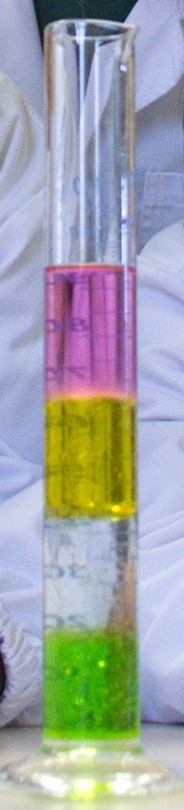

Tres números para describir un líquido, y por qué el agua hierve antes en la montaña
Un bloque de bronce y uno de madera pueden pesar exactamente lo mismo, pero el de madera ocupa mucho más lugar. Si los tirás a una pecera, el de bronce se hunde y el de madera flota [1]. Lo que los distingue es la densidad. Junto con ella, hay otras dos propiedades que aparecen en casi cualquier problema con líquidos: el peso específico, que dice cuánto pesa cada metro cúbico, y la presión de vapor, que dice cuándo un líquido empieza a hervir.
La densidad es la masa por unidad de volumen, ρ = m/V, y en el Sistema Internacional se mide en kg/m³ [1]. El sistema métrico se diseñó para que el agua tuviera una densidad de 1 g/cm³, es decir, 1000 kg/m³: el kilogramo nació como la masa de un litro de agua [1]. La tabla de OpenStax da algunos valores a 0 °C: unos 680 kg/m³ para la nafta, 13 600 kg/m³ para el mercurio, 1,29 kg/m³ para el aire y 0,18 kg/m³ para el helio [1].
Para comparar densidades sin preocuparse por las unidades se usa la gravedad específica, el cociente entre la densidad de un material y la del agua [1]. El mercurio tiene una gravedad específica de unos 13,6: es 13,6 veces más denso que el agua.

El peso específico γ es el peso por unidad de volumen: la densidad multiplicada por la aceleración de la gravedad. Para el agua a 20 °C, con la densidad del NIST, da unos 9790 newtons por metro cúbico (un cálculo propio) [2]. Es la magnitud que aparece cuando se calcula cuánto aumenta la presión con la profundidad, el tema de la ley fundamental de la hidrostática: cada metro de agua agrega una presión igual a su peso específico multiplicado por un metro.
OpenStax señala que la densidad de los gases cambia mucho con la temperatura, mientras que la de los líquidos cambia poco, y por eso esta suele tratarse como constante [1]. Pero «poco» no es «nada». Con los datos del NIST, el agua a presión atmosférica tiene 999,84 kg/m³ a 0 °C, llega a un máximo de 999,97 kg/m³ cerca de los 4 °C y vuelve a bajar: 998,2 kg/m³ a 20 °C y unos 958 kg/m³ cerca de los 100 °C [2].
Al enfriarse desde la temperatura ambiente, el agua se vuelve más densa, como se espera. Pero los datos del NIST muestran que, por debajo de unos 4 °C, la tendencia se invierte y el agua líquida se vuelve menos densa a medida que se enfría [2]. Las diferencias son pequeñas, de una diezmilésima, pero cuando dos porciones de agua están en contacto, la más densa tiende a quedar abajo.
Las moléculas de un líquido se escapan todo el tiempo de su superficie, y las del vapor vuelven a entrar. La presión de vapor es la presión del vapor cuando está en equilibrio con su líquido [3]. Depende fuertemente de la temperatura. Según el NIST, la del agua es de 0,61 kPa a 0 °C, de 2,34 kPa a 20 °C, de 12,4 kPa a 50 °C y de unos 101,4 kPa a 100 °C [2].
Ese último número no es casual. Un líquido hierve cuando su presión de vapor iguala la presión del ambiente: el punto de ebullición, a una presión dada, es la temperatura a la que eso ocurre [4]. A 1 atm, unos 101,3 kPa, el agua hierve a 100 °C [4]. Si la presión es menor, como en la montaña, alcanza una temperatura más baja para llegar a esa presión de vapor, y el agua hierve antes [4]. Es la razón por la que el mate se ceba distinto en la Puna, como se cuenta en la física del mate.
El portón de la cancha: imaginá que las moléculas del líquido son hinchas que quieren salir y la presión del ambiente es un portón que los empuja hacia adentro. A medida que el líquido se calienta, los hinchas empujan más fuerte. Cuando su empuje iguala al del portón, salen en masa por todos lados, no solo por la superficie: eso es el hervor. Si el portón empuja menos, como en la montaña, alcanza con menos calor.
El rocío: la presión de vapor también limita cuánta agua puede haber en el aire. A una temperatura dada, la presión parcial del vapor de agua en el aire no puede superar la presión de vapor del agua: cuando la alcanza, el agua se condensa. El rocío es un ejemplo, y la temperatura a la que empieza a condensarse es el punto de rocío [3].
Densidad, peso específico y presión de vapor parecen números de tabla, pero cada uno responde una pregunta concreta: qué flota y qué se hunde, cuánto aprieta el agua en el fondo de una pileta y a qué temperatura hierve. Las tres dependen de la temperatura, y la tercera, mucho. En los próximos artículos de la sección aparecen una y otra vez, desde la flotación hasta la cavitación de las hélices.
Pregunta para la comunidad: En una olla a presión, la presión adentro sube por encima de la atmosférica. Con lo que viste de la presión de vapor, ¿el agua adentro hierve a más o a menos de 100 °C? ¿Por qué eso cocina más rápido?